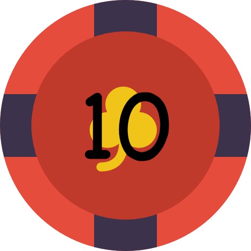
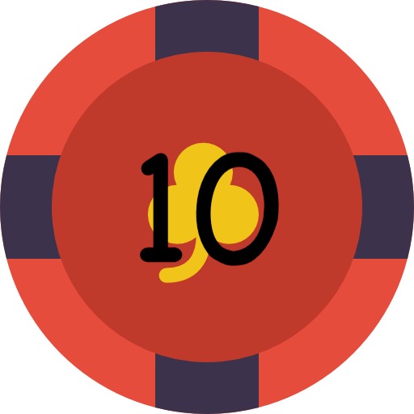

"Rain, Breathtaking, Struggle"
-Ryan
HOUSHU, JAPAN
Ryan climbed Mt. Fuji in Honshu, Japan, with his family during the summer. It was raining at the time, but still he said it was a unique experience.
“So we got to the top [and] we couldn't see the crater, but then once [we started]going down, it completely cleared up and it was like gorgeous,” he said. He added that “some nice dude” at the top of the mountain gave him and his family some hot chocolate.


"Great time & Adventure"
-Cindy
VIETNAM
Cindy went to Vietnam with her friends and they rode motorcycles all over Saigon with local people They went to several spots to eat, drink and experience the culture.
“We went to this street food place and they sold crabs,” said Cindy. “And you just sat on the floor and the tables were really low and [it was outdoors] So that was really cool.”
Cindy’s parents were born in Vietnam and even though she was not, she said that this trip hit home. She said her parents faced struggles during the Vietnam War. Cindy recommended the [War Remnants Museum].
It was just really, I guess impactful and moving,” she said.

"Adventure, Diplomacy, Adventure"
-Lindsay
VIETNAM
Lindsey has been to Vietnam seven times and each time was different from the last. Once, she went on a trip with f U.S. [military] veterans where the group was going to meet with Vietnamese veterans.
“During war, they were enemies, but now they’re friends,” she said. She added that Vietnamese people are very open, welcoming and friendly.
Her most memorable experience was when she met up with a group of local college students in a coffee shop.
“They asked me if I would be willing to give an English lesson and since I’m a professor it seemed like a natural thing to do to have the teaching experience with local individuals,” she said. “So it was a win-win opportunity because I was able to use my skills and teaching and give them an impromptu English lesson and then they were able to show me photos of local cuisine and show me some pictures of the local heritage sites that I should visit.”

VIETNAM
Lindsey has been to Vietnam seven times and each time was different from the last. Once, she went on a trip with U.S. [military] veterans where the group was going to meet with Vietnamese veterans.
“During war, they were enemies, but now they’re friends,” she said. She added that Vietnamese people are very open, welcoming and friendly.
Her most memorable experience was when she met up with a group of local college students in a coffee shop.
“They asked me if I would be willing to give an English lesson and since I’m a professor it seemed like a natural thing to do to have the teaching experience with local individuals,” she said. “So it was a win-win opportunity because I was able to use my skills and teaching and give them an impromptu English lesson and then they were able to show me photos of local cuisine and show me some pictures of the local heritage sites that I should visit.”